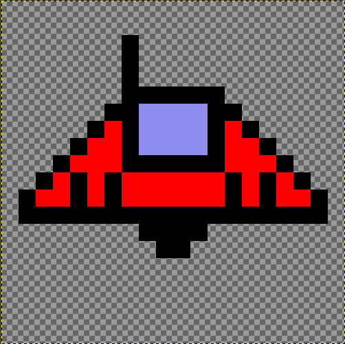

My Games
Below is a list of games I have made which are publically released in a playable state.


Lone Fighter
Release Date: WIP
Lone Fighter is a 2D shoot em 'up where the player takes on alien spaceships and collects power ups and ship upgrades.
Lone Fighter originally started as a coding exercise for a game-dev programming job.
Since then I've decided to continuously build upon it to expand my skill set. The game is written in C#.
The game features the following components:
- An endless action mode
- 4 different enemy types with various guns and health
- Highscores, including accuracy, kills and power ups tracking